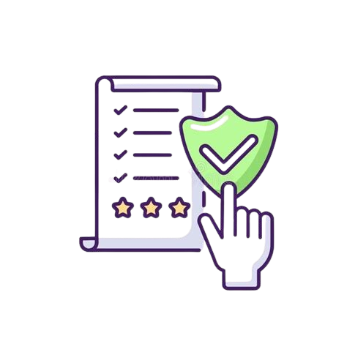

Responsabilidad
Por eso se establecen las siguientes responsabilidades, para que cada persona sepa qué se espera de ella y a quién acudir cuando surja un problema.
|
|
Volver. | |
Responsabilidad |
||
|
El cumplimiento de este plan depende de todas las personas de Recyclon, no solo de la dirección.
Por eso se establecen las siguientes responsabilidades, para que cada persona sepa qué se espera de ella y a quién acudir cuando surja un problema. |
||

Reparto de responsabilidades. |

Resumen por puesto de trabajo. |
|
Responsable. |
 Funciones principales. |
Se relaciona con... |
| Responsable de equipos e información. | Mantenimiento de equipos, actualizaciones, copias de seguridad e incidencias informáticas. |
Prevención de riesgos informáticos;
Gestión de incidentes. |
| Responsable de prevención. | Cumplimiento de las medidas laborales, detección de riesgos y aviso de situaciones peligrosas. |
Prevención de riesgos laborales;
Seguridad física de las instalaciones; Prevención de riesgos eléctricos y químicos; Gestión de incidentes. |
| Personal de la empresa. | Cumplir las normas, usar bien los equipos y comunicar riesgos e incidentes. | Todo el plan. |
Una misma persona puede asumir más de un cargo, según el tamaño de la empresa.
Lo importante es que las funciones esten asignadas, que todo el personal conozca a quién debe dirigirse y que cualquier riesgo o
incidente se comunique sin demora, tal y como se indica en el apartado de gestión de incidentes.
De este modo, las medidas de prevención no quedan solo escritas, sino que cada persona sabe que le corresponde hacer.

|
Volver arriba. |
Siguiente. |

|